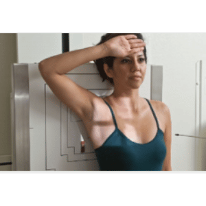
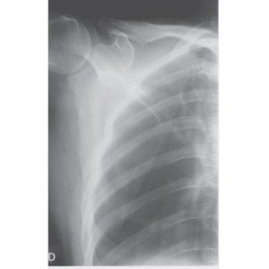
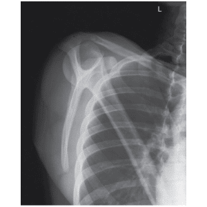

ESCÁPULA - AP
Paciente
Em ortostático ou DD, braço abduzido com a mão em
supinação encostada na fronte ou mão na cintura , centralizar a escápula em
relação ao chassi.
Chassis / Filme
18×24 / 24×30 longitudinal, panorâmico.
Raio central
⊥ orientado para o centro da escápula.
DFF
1,00 m – com bucky.


ESCÁPULA - PERFIL
Paciente
Em ortostático em PA ou DV, corpo obliquado à 45º, braço estendido em posição neutra, centralizar a escápula em relação ao chassi.
Chassis / Filme
18×24 / 24×30 longitudinal, panorâmico.
Raio central
⊥ orientado para o centro da escápula.
DFF
1,00 m – com bucky.
